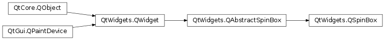

QSpinBox¶
Synopsis¶
Functions¶
- def
cleanText() - def
displayIntegerBase() - def
maximum() - def
minimum() - def
prefix() - def
setDisplayIntegerBase(base) - def
setMaximum(max) - def
setMinimum(min) - def
setPrefix(prefix) - def
setRange(min, max) - def
setSingleStep(val) - def
setSuffix(suffix) - def
singleStep() - def
suffix() - def
value()
Virtual functions¶
- def
textFromValue(val) - def
valueFromText(text)
Signals¶
- def
valueChanged(arg__1) - def
valueChanged(arg__1)
Detailed Description¶
The
PySide2.QtWidgets.QSpinBoxclass provides a spin box widget.
PySide2.QtWidgets.QSpinBoxis designed to handle integers and discrete sets of values (e.g., month names); usePySide2.QtWidgets.QDoubleSpinBoxfor floating point values.
PySide2.QtWidgets.QSpinBoxallows the user to choose a value by clicking the up/down buttons or pressing up/down on the keyboard to increase/decrease the value currently displayed. The user can also type the value in manually. The spin box supports integer values but can be extended to use different strings withPySide2.QtWidgets.QSpinBox.validate(),PySide2.QtWidgets.QSpinBox.textFromValue()andPySide2.QtWidgets.QSpinBox.valueFromText().Every time the value changes
PySide2.QtWidgets.QSpinBoxemits twoPySide2.QtWidgets.QSpinBox.valueChanged()signals, one providing an int and the other aPySide2.QtCore.QString. ThePySide2.QtCore.QStringoverload provides the value with bothPySide2.QtWidgets.QSpinBox.prefix()andPySide2.QtWidgets.QSpinBox.suffix(). The current value can be fetched withPySide2.QtWidgets.QSpinBox.value()and set withPySide2.QtWidgets.QSpinBox.setValue().Clicking the up/down buttons or using the keyboard accelerator’s up and down arrows will increase or decrease the current value in steps of size
PySide2.QtWidgets.QSpinBox.singleStep(). If you want to change this behaviour you can reimplement the virtual functionPySide2.QtWidgets.QAbstractSpinBox.stepBy(). The minimum and maximum value and the step size can be set using one of the constructors, and can be changed later withPySide2.QtWidgets.QSpinBox.setMinimum(),PySide2.QtWidgets.QSpinBox.setMaximum()andPySide2.QtWidgets.QSpinBox.setSingleStep().Most spin boxes are directional, but
PySide2.QtWidgets.QSpinBoxcan also operate as a circular spin box, i.e. if the range is 0-99 and the current value is 99, clicking “up” will give 0 ifPySide2.QtWidgets.QAbstractSpinBox.wrapping()is set to true. UsePySide2.QtWidgets.QAbstractSpinBox.setWrapping()if you want circular behavior.The displayed value can be prepended and appended with arbitrary strings indicating, for example, currency or the unit of measurement. See
PySide2.QtWidgets.QSpinBox.setPrefix()andPySide2.QtWidgets.QSpinBox.setSuffix(). The text in the spin box is retrieved withPySide2.QtWidgets.QAbstractSpinBox.text()(which includes anyPySide2.QtWidgets.QSpinBox.prefix()andPySide2.QtWidgets.QSpinBox.suffix()), or withPySide2.QtWidgets.QSpinBox.cleanText()(which has noPySide2.QtWidgets.QSpinBox.prefix(), noPySide2.QtWidgets.QSpinBox.suffix()and no leading or trailing whitespace).It is often desirable to give the user a special (often default) choice in addition to the range of numeric values. See
PySide2.QtWidgets.QAbstractSpinBox.setSpecialValueText()for how to do this withPySide2.QtWidgets.QSpinBox.
Subclassing QSpinBox¶
If using
PySide2.QtWidgets.QSpinBox.prefix(),PySide2.QtWidgets.QSpinBox.suffix(), andPySide2.QtWidgets.QAbstractSpinBox.specialValueText()don’t provide enough control, you subclassPySide2.QtWidgets.QSpinBoxand reimplementPySide2.QtWidgets.QSpinBox.valueFromText()andPySide2.QtWidgets.QSpinBox.textFromValue(). For example, here’s the code for a custom spin box that allows the user to enter icon sizes (e.g., “32 x 32”):def valueFromText(self, text): regExp = QRegExp(tr("(\\d+)(\\s*[xx]\\s*\\d+)?")) if regExp.exactMatch(text): return regExp.cap(1).toInt() else: return 0 def textFromValue(self, value): return self.tr("%1 x %1").arg(value)See the Icons example for the full source code.
-
class
PySide2.QtWidgets.QSpinBox([parent=nullptr])¶ Parameters: parent – PySide2.QtWidgets.QWidgetConstructs a spin box with 0 as minimum value and 99 as maximum value, a step value of 1. The value is initially set to 0. It is parented to
parent.
-
PySide2.QtWidgets.QSpinBox.cleanText()¶ Return type: unicode
-
PySide2.QtWidgets.QSpinBox.displayIntegerBase()¶ Return type: PySide2.QtCore.int
-
PySide2.QtWidgets.QSpinBox.maximum()¶ Return type: PySide2.QtCore.int
-
PySide2.QtWidgets.QSpinBox.minimum()¶ Return type: PySide2.QtCore.int
-
PySide2.QtWidgets.QSpinBox.prefix()¶ Return type: unicode
-
PySide2.QtWidgets.QSpinBox.setDisplayIntegerBase(base)¶ Parameters: base – PySide2.QtCore.int
-
PySide2.QtWidgets.QSpinBox.setMaximum(max)¶ Parameters: max – PySide2.QtCore.intSee also
-
PySide2.QtWidgets.QSpinBox.setMinimum(min)¶ Parameters: min – PySide2.QtCore.intSee also
-
PySide2.QtWidgets.QSpinBox.setPrefix(prefix)¶ Parameters: prefix – unicode See also
-
PySide2.QtWidgets.QSpinBox.setRange(min, max)¶ Parameters: - min –
PySide2.QtCore.int - max –
PySide2.QtCore.int
Convenience function to set the
minimum, andmaximumvalues with a single function call.setRange(minimum, maximum)
is equivalent to:
setMinimum(minimum) setMaximum(maximum)
- min –
-
PySide2.QtWidgets.QSpinBox.setSingleStep(val)¶ Parameters: val – PySide2.QtCore.int
-
PySide2.QtWidgets.QSpinBox.setSuffix(suffix)¶ Parameters: suffix – unicode See also
-
PySide2.QtWidgets.QSpinBox.setValue(val)¶ Parameters: val – PySide2.QtCore.intSee also
-
PySide2.QtWidgets.QSpinBox.singleStep()¶ Return type: PySide2.QtCore.int
-
PySide2.QtWidgets.QSpinBox.suffix()¶ Return type: unicode
-
PySide2.QtWidgets.QSpinBox.textFromValue(val)¶ Parameters: val – PySide2.QtCore.intReturn type: unicode This virtual function is used by the spin box whenever it needs to display the given
value. The default implementation returns a string containingvalueprinted in the standard way usingQWidget.locale().toString(), but with the thousand separator removed unlessPySide2.QtWidgets.QAbstractSpinBox.setGroupSeparatorShown()is set. Reimplementations may return anything. (See the example in the detailed description.)Note:
PySide2.QtWidgets.QSpinBoxdoes not call this function forPySide2.QtWidgets.QAbstractSpinBox.specialValueText()and that neitherPySide2.QtWidgets.QSpinBox.prefix()norPySide2.QtWidgets.QSpinBox.suffix()should be included in the return value.If you reimplement this, you may also need to reimplement
PySide2.QtWidgets.QSpinBox.valueFromText()andPySide2.QtWidgets.QSpinBox.validate()See also
PySide2.QtWidgets.QSpinBox.valueFromText()PySide2.QtWidgets.QSpinBox.validate()QLocale.groupSeparator()
-
PySide2.QtWidgets.QSpinBox.value()¶ Return type: PySide2.QtCore.int
-
PySide2.QtWidgets.QSpinBox.valueChanged(arg__1)¶ Parameters: arg__1 – PySide2.QtCore.intdef callback_int(value_as_int): print 'int value changed:', repr(value_as_int) app = QApplication(sys.argv) spinbox = QSpinBox() spinbox.valueChanged[unicode].connect(callback_unicode) spinbox.show() sys.exit(app.exec_())
-
PySide2.QtWidgets.QSpinBox.valueChanged(arg__1) Parameters: arg__1 – unicode def callback_unicode(value_as_unicode): print 'unicode value changed:', repr(value_as_unicode) app = QApplication(sys.argv) spinbox = QSpinBox() spinbox.valueChanged[unicode].connect(callback_unicode) spinbox.show() sys.exit(app.exec_())
-
PySide2.QtWidgets.QSpinBox.valueFromText(text)¶ Parameters: text – unicode Return type: PySide2.QtCore.intThis virtual function is used by the spin box whenever it needs to interpret
textentered by the user as a value.Subclasses that need to display spin box values in a non-numeric way need to reimplement this function.
Note:
PySide2.QtWidgets.QSpinBoxhandlesPySide2.QtWidgets.QAbstractSpinBox.specialValueText()separately; this function is only concerned with the other values.See also
PySide2.QtWidgets.QSpinBox.textFromValue()PySide2.QtWidgets.QSpinBox.validate()
© 2018 The Qt Company Ltd. Documentation contributions included herein are the copyrights of their respective owners. The documentation provided herein is licensed under the terms of the GNU Free Documentation License version 1.3 as published by the Free Software Foundation. Qt and respective logos are trademarks of The Qt Company Ltd. in Finland and/or other countries worldwide. All other trademarks are property of their respective owners.